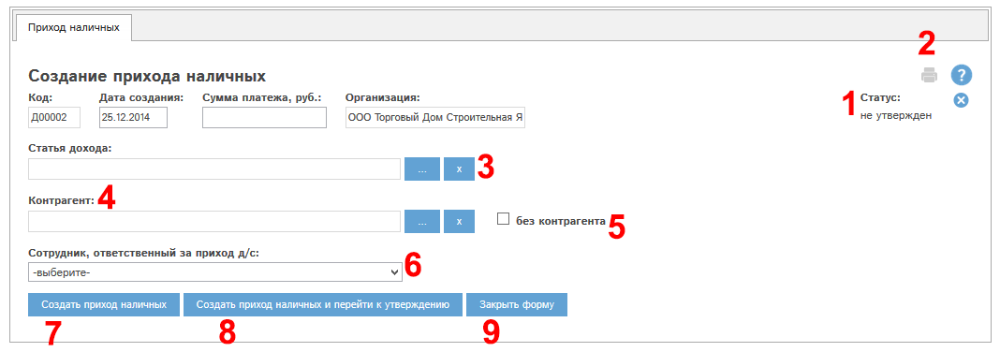
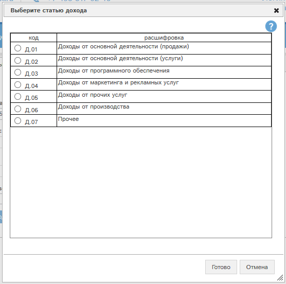
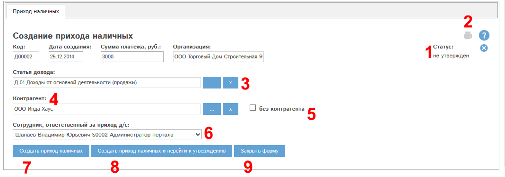

Создание прихода наличных при наличии у Вас прав на данное действие производится с помощью кнопки «Создать приход наличных…» в реестре приходов наличных.
Создание происходит в 2 этапа: заполнение прихода и утверждение прихода.
При нажатии кнопки «Создать приход наличных…» открывается окно создания прихода:

Рис. 5.50 Окно создания прихода наличных
Рассмотрим поля и кнопки окна создания прихода наличных.
Поле «Статус» (1) у вновь создаваемого прихода наличных имеет значение «не утвержден».
Щелкнув по кнопке  ,
Вы можете отменить создание прихода.
,
Вы можете отменить создание прихода.
Кнопка «Печать» (2) позволяет распечатать приход, в окне создания прихода данная кнопка неактивна.
Блок "Статья дохода" (3). В этом блоке необходимо выбрать из справочника код статьи дохода. Для выбора нажмите кнопку "..." в блоке 3. Откроется окно выбора статьи дохода:

Рис. Окно выбора статьи дохода.
Отметьте требуемый код статьи дохода в столбце "Код" и нажмите кнопку "Готово". Выбранный нами код подставится в карту прихода.
В блоке "Контрагент" (4) нужно выбрать связанного контрагента. Если приход наличных не связан с каким-либо контрагентом, то нужно отметить галочку "без контрагента" (5).
Выберем код " Д.01 Доходы от основной деятельности (продажи) ".
Выберем контрагента; укажем сумму платежа; выберем сотрудника, отвественного за приход д/с (6):

Рис. Создание прихода наличных: карта заполнена.
Затем нажмем кнопку «Создать приход наличных и перейти к утверждению» (8). Откроется окно редактирования вновь созданного прихода наличных.